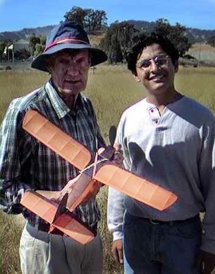

| 
Thanks to the internet, Omi Chandiramani joined us last fall. He found out about the Marin Aero Club through these pages, and came out to see us in action. As Omi had nothing to fly for his first visit, George Benson, on the left, lent him a 7 year old 24" span Island Flyer. It is a stable and dependable aircraft. On a mass launch with my Flying Aces Moth, and Gale Wagner's Iron Horse, he beat us out a 60:1 ratio. I had misadjusted my rudder, and was in the tall grass after 4 scant seconds. Gale followed me to the ground, landing at 6 seconds. And then the chase began. The Island Flyer had hooked a bubble of warm air, and headed up, and up, and up. Jerry tracked it with my binoculars, but lost sight of it at 4 minutes 30 seconds. Fortunately, George, Omi and I were running after it, and found it nestled in a bush on the far side of the school. Total time in the air was 5 minutes 32 seconds. Walking back to the launch site, we joked about how Omi had experienced his first OOS flight without the emotional loss of his own model. Note Omi's smile, and George's wry grin at our sense of humour. |
Copyright 1999, Thayer Syme. All rights reserved